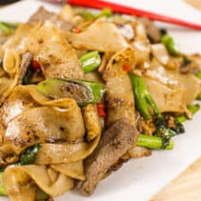

Pad See Ew

Description
It's what I call Thai fast food! This deliciously chewy pan-fried rice noodles is a popular street food in Thailand, and it's super easy to whip up at home!
Ingredients
- 6 oz protein of your choice
- 1 TBSP soy sauce
- 3-4 TBSP vegetable oil
- 4 cloves garlic
- 2 eggs
- 4 stalks Chinese Broccoli
- 1 lb rice noodles
- 4 tsp sugar
- Ground white pepper
Steps
- 1. Stir the meat and soy sauce together well, then add about 2 tsp of oil and stir to coat the meat; this will help the meat separate when you go to cook it. Let the meat sit while you prep other ingredients.
- 2. Combine all sauce ingredients together and stir to mix well.
- 3. Heat 1 Tbsp of the vegetable oil in a wok or a large non-stick sauté pan over medium-high heat. When hot, add all of the protein and cook just until done. Remove meat from pan and set aside in a small bowl. If there is meat juices left in the
wok, wipe it with a paper towel.
- 4. From this step onward, I recommend cooking 1 portion at a time for best result: Add 1½ Tbsp vegetable oil and garlic to the wok and sauté over medium high heat until the smallest bits of garlic starts to turn colour.
- 5. Add egg, break the yolk, let it set just about halfway, then scramble briefly.
- 6. Add Chinese broccoli and toss to coat it evenly in the oil, about 10–15 seconds.
- 7. Add 8oz (227g) rice noodles, 2 Tbsp + 1 tsp of the sauce mix, and 2 tsp of sugar. Turn the heat up to high and toss to coat the noodles evenly in the sauce.
- 8. Once coated, spread the noodles out to cover the entire pan and let them sit without stirring for about 15-30 seconds until some of the noodles have “toasted” i.e. have some charred marks on them (how long this takes depends on how hot your
stove gets). Flip the noodles and let them sit again to toast the other side. You may flip the noodles again a couple more times to get more toasting if you wish.
- 9. Add 1 portion of the cooked protein back into the pan, being careful not to add any meat juices that has accumulated in the bowl, and toss briefly to mix and heat up the protein.
- 10. Plate the noodles, then quickly wipe the pan clean with paper towel and cook the next serving.